Lecture 7 Energy Systems Overview
Energy systems
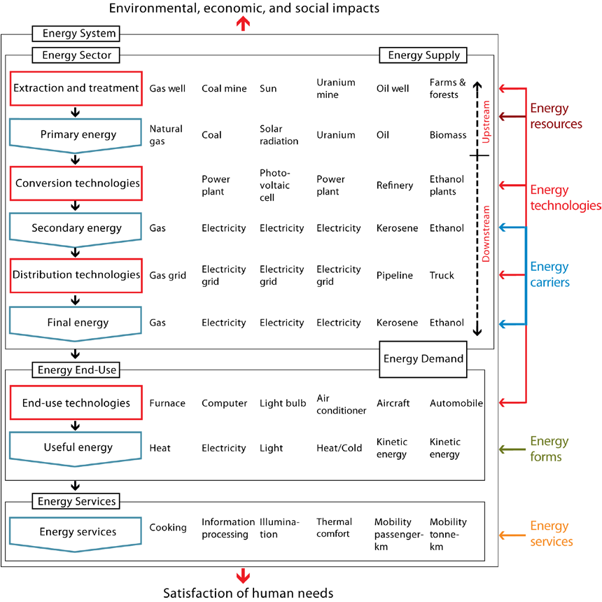
Resources vs reserves
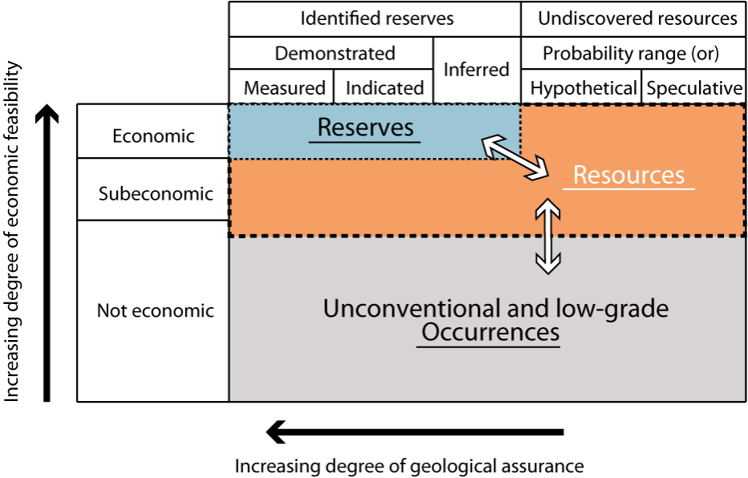
Energy and their conversions
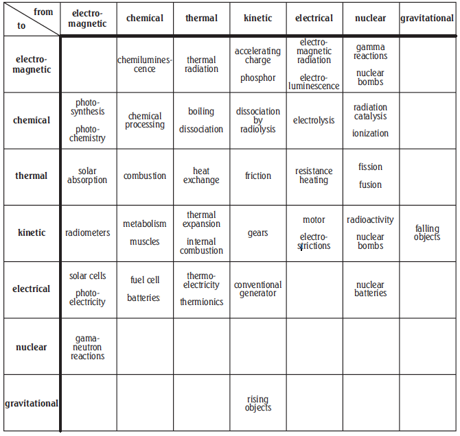
Global energy flow
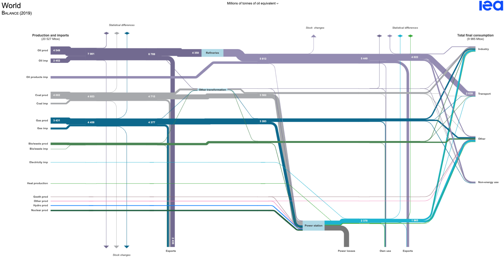
U.S. energy flow
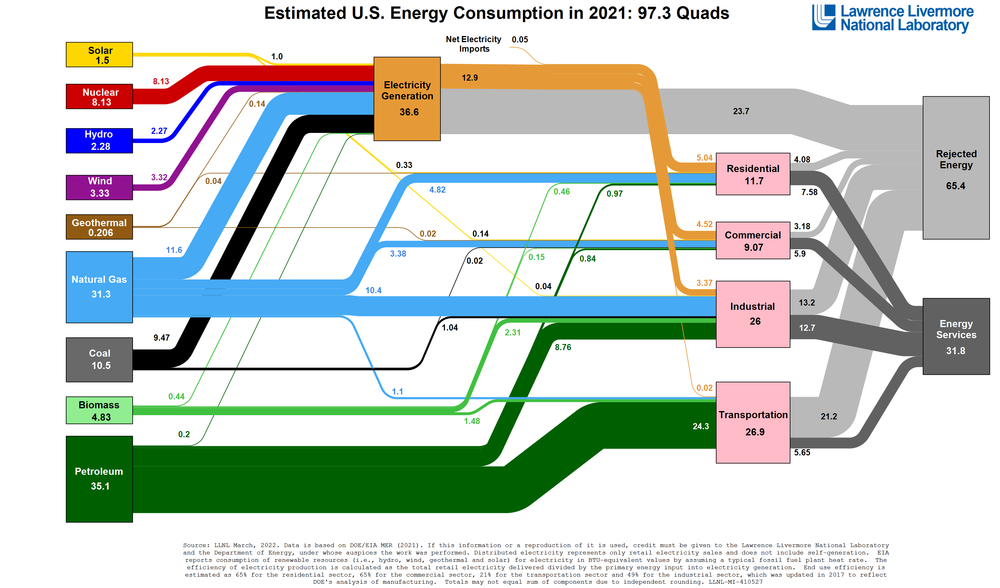
Energy by supply
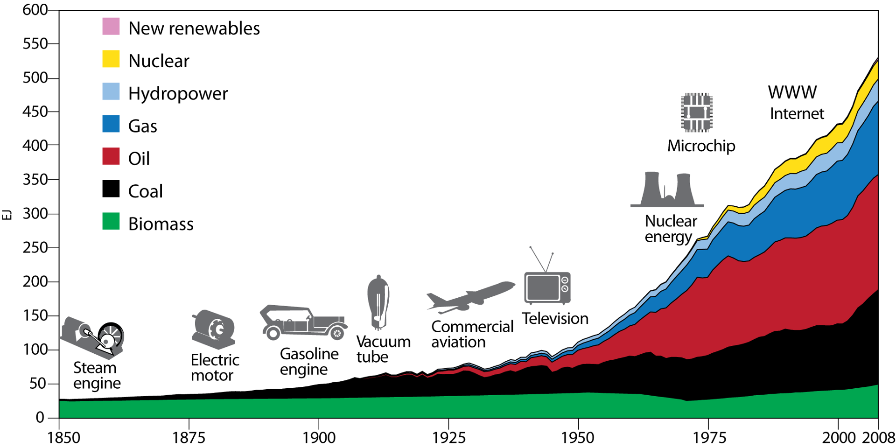
Energy end-use by sector
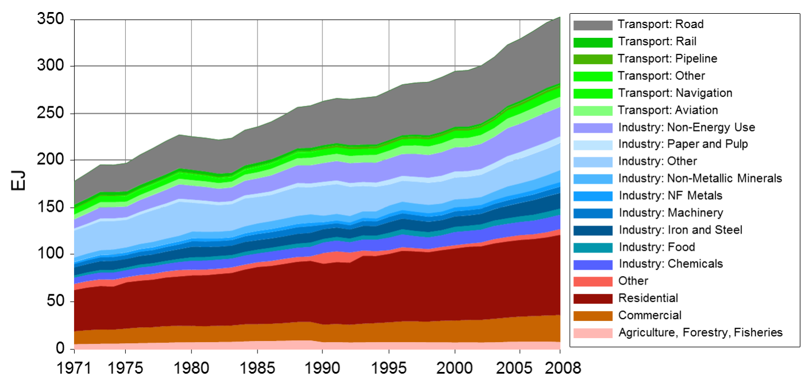
Matching supply and demand
It operates like “magic”
But relies on massive infrastructure, markets, and regulations
- Deliver service at the right time, location, and price
- Meet safety, reliability, and environmental standards
- Increasingly disrupted by political economy and climate change
Solution is usually location and temporal based
Electrify eveything, where are we now
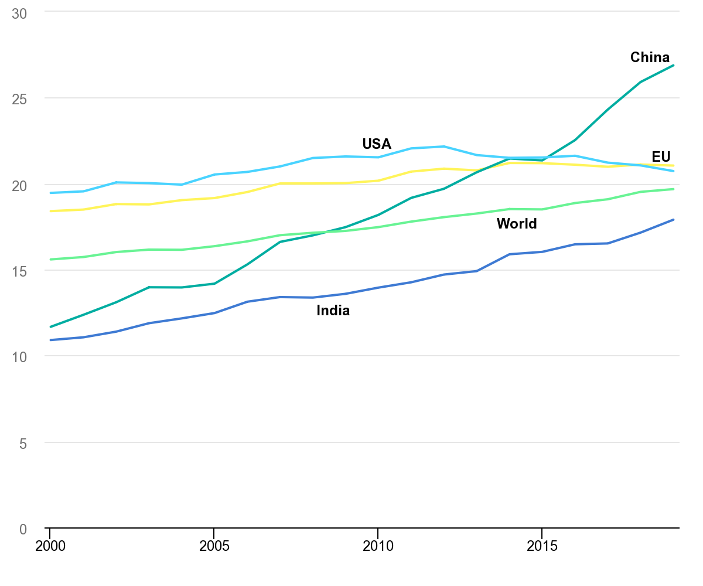
Electrify eveything, net zero
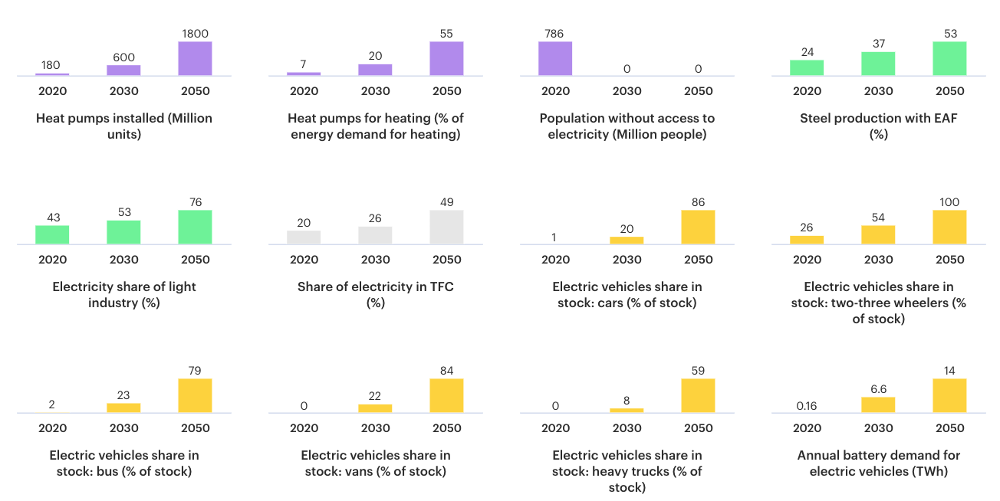
Energy efficiency
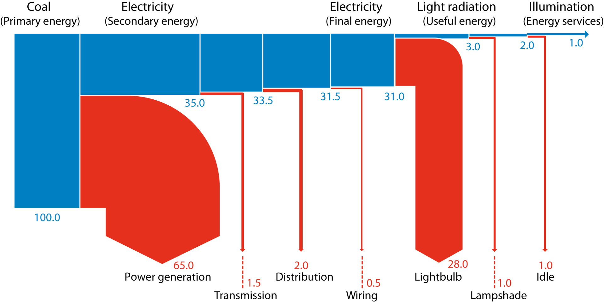
Electric efficiency vs fossil efficiency
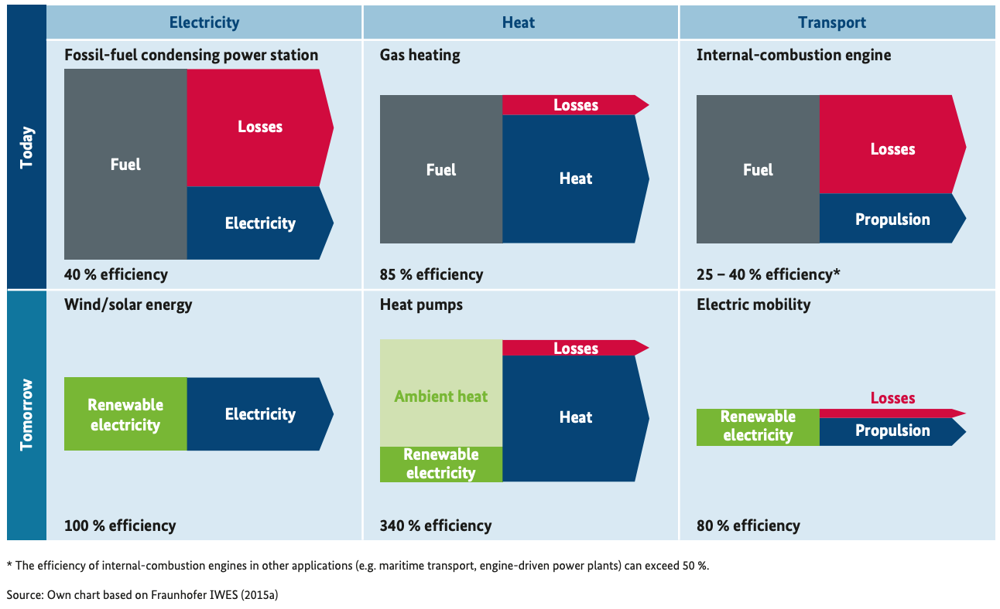
Milestones for long-term energy transition
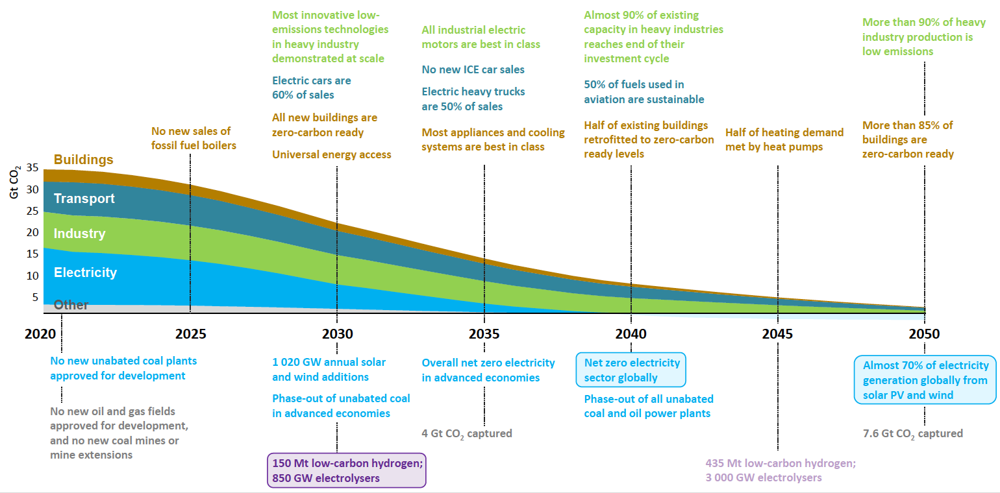
NYS Climate Leadership and Community Protection Act
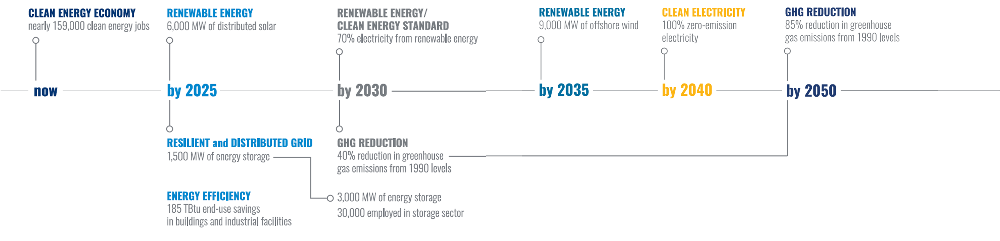
35%-40% of the benefits of NY CLCPA investments must flow to disadvantaged communities
U.S. shale gas revolution
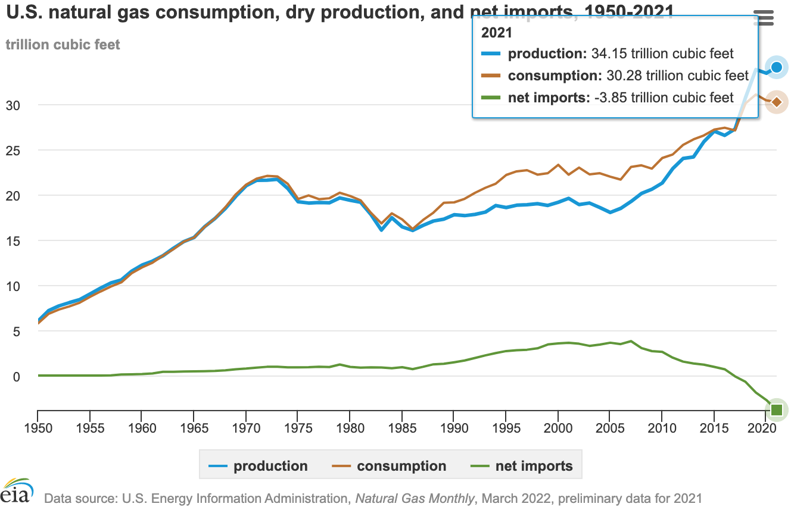
Renewable revolution: achieving grid parity

Renewable revolution: solar and wind taking off
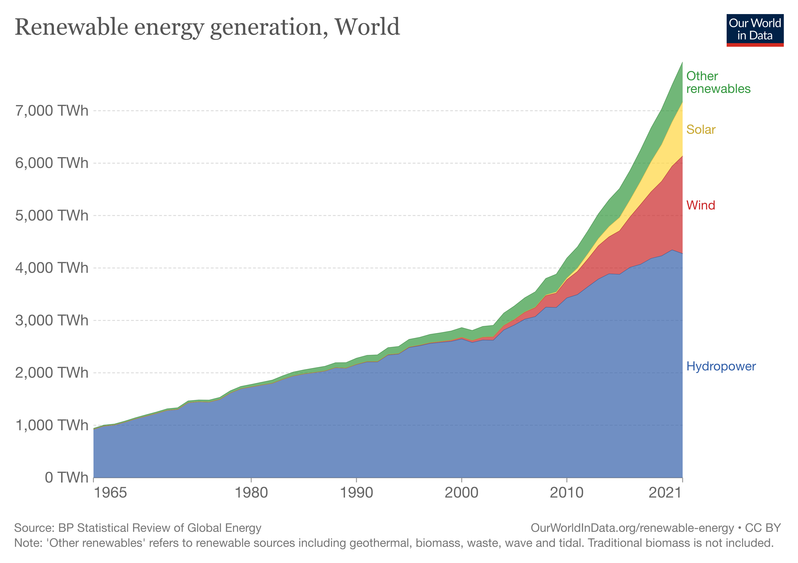
References
BMWi. 2015. “An Electricity Market for Germany’s Energy Transition: White Paper by the Federal Ministry for Economic Affairs and Energy.” Federal Ministry for Economic Affairs; Energy. https://www.bmwk.de/Redaktion/EN/Publikationen/whitepaper-electricity-market.html.
IEA. 2021. “Net Zero by 2050.” International Energy Agency.
Smil, Vaclav. 2017. Energy: A Beginner’s Guide. Simon; Schuster.